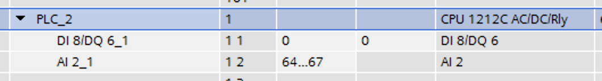

S7 (Step7)
Connection String Options
| Name | Value | Description |
|---|---|---|
Code |
|
|
Name |
Siemens S7 Protocol |
|
Maven Dependency |
<dependency>
<groupId>org.apache.plc4x</groupId>
<artifactId>plc4j-driver-s7</artifactId>
<version>{current-last-released-version}</version>
</dependency>
|
|
Default Transport: |
|
|
Compatible Transports: |
|
|
Supported Operations |
||
|
Only supported with |
|
|
Only supported with |
|
Options |
||
|
|
|
|
|
|
|
|
|
|
|
|
|
Maximum size of a data-packet sent to and received from the remote PLC. During the connection process both parties will negotiate a maximum size both parties can work with and is equal or smaller than the given value is used. The driver will automatically split up large requests to not exceed this value in a request or expected response. |
|
|
Maximum number of unconfirmed requests the PLC will accept in parallel before discarding with errors. This parameter also will be negotiated during the connection process and the maximum both parties can work with and is equal or smaller than the given value is used. The driver will automatically take care not exceeding this value while processing requests. Too many requests can cause a growing queue. |
|
|
Maximum number of unconfirmed responses or requests PLC4X will accept in parallel before discarding with errors. This option is available for completeness and is correctly handled out during the connection process, however it is currently not enforced on PLC4X’s side. So if a PLC would send more messages than agreed upon, these would still be processed. |
|
|
As part of the connection process, usually the PLC4X S7 driver would try to identify the remote device.
However some devices seem to have problems with this and hang up or cause other problems.
In such a case, providing the
|
|
Individual Resource Address Format
When programming Siemens PLCs, usually the tool used to do that is called TIA Portal.
The PLC4X S7 Driver is therefore sticking to the address format defined by this tool as it simplifies exchanging address information.
General Format
In general all S7 addresses have this format:
%{Memory-Area}{start-address}:{Data-Type}[{array-size}]
If the array-part is omitted, the size-default of 1 is assumed.
Generally there are two types of addresses:
-
Bit-Addresses {Memory-Area-Code}{Start-Byte-Address}.{Bit-Offset}:BOOL[{Count}]
-
Byte-Addresses {Memory-Area-Code}{Start-Byte-Address}:{Data-Type-Code}[{count}]
Bit addresses are only used if the datatype: BOOL is used.
The array notation of these can be omitted. In this case a Count of 1 is used per default.
Start-Byte-Address and Bit-Offset in above list both represent unsigned integer values.
In case of accessing data in the data block memory area, the syntax is quite a bit more complex:
-
DB{Data-Block-Number}.DB{Short-Data-Type-Code}{Start-Byte-Address}.{Bit-Offset}:BOOL[{Count}]
-
DB{Data-Block-Number}.DB{Short-Data-Type-Code}{Start-Byte-Address}:{Data-Type-Code}[{Count}]
When reading a STRING datatype, currently 254 characters would automatically be fetched from the PLC.
In order to limit the amount of data, we extended the STRING type declaration syntax to allow limiting this.
With the following format less than 254 characters can be read:
-
DB{Data-Block-Number}.DB{Short-Data-Type-Code}{Start-Byte-Address}:STRING({string-length})[{Count}]
These addresses can usually be copied directly out of TIA portal.
However we also implemented a shorter version, as above version does have some unnecesary boilerplate parts (The .DB in the middle as well as the Short-Data-Type-Code)
The shorter syntax looks like this:
-
DB{Data-Block-Number}:{Start-Byte-Address}.{Bit-Offset}:BOOL[{Count}]
-
DB{Data-Block-Number}:{Start-Byte-Address}:{Data-Type-Code}[{Count}]
-
DB{Data-Block-Number}:{Start-Byte-Address}:STRING({string-length})[{Count}]
The S7 driver will handle both types of notation equally.
Memory Areas
The S7 driver currently allows access to the following memory areas.
The Code column represents the code that is used in above general address syntax:
Not all S7 device types support the same full set of memory areas, so the last column gives more information on which types a given memory area is supported on.
| Code | Name | Description | Supported PLC Types |
|---|---|---|---|
C |
COUNTERS |
TODO: Document this |
TODO: Document this |
T |
TIMERS |
TODO: Document this |
TODO: Document this |
D |
DIRECT_PERIPHERAL_ACCESS |
TODO: Document this |
TODO: Document this |
I |
INPUTS |
Inputs (Digital and Analog … usually Analog Inputs just have a start-address offset to separate them from the digital ones) |
All |
Q |
OUTPUTS |
Outputs (Digital and Analog … usually Analog Outputs just have a start-address offset to separate them from the digital ones) |
All |
M |
FLAGS_MARKERS |
TODO: Document this |
TODO: Document this |
DB |
DATA_BLOCKS |
Memory areas containing user-defined data structures usually accessed by the integer data block number. Please note that data block addresses have a little more complex address format. |
All |
DBI |
INSTANCE_DATA_BLOCKS |
TODO: Document this |
TODO: Document this |
LD |
LOCAL_DATA |
TODO: Document this |
TODO: Document this |
Data Types
| Code | Short-Code | Name | Description | Size in bits | Supported PLC Types |
|---|---|---|---|---|---|
Bit-Strings (Will all interpreted as sequence of boolean values in PLC4X) |
|||||
BOOL |
X |
Bit |
Single boolean value |
1 |
All |
BYTE |
B |
Byte |
Array of 8 boolean values |
1 |
All |
WORD |
W |
Word |
Array of 16 boolean values |
2 |
All |
DWORD |
D |
Double-Word |
Array of 32 boolean values |
4 |
All |
LWORD |
X |
Long-Word |
Array of 64 boolean values |
8 |
S7_1500 |
Integer values |
|||||
SINT |
B |
Small int |
8 bit integer (signed) |
1 |
S7_1200, S7_1500 |
USINT |
B |
Small unsigned int |
8 bit integer (unsigned) |
1 |
S7_1200, S7_1500 |
INT |
W |
Integer |
16 bit integer (signed) |
2 |
All |
UINT |
W |
Unsigned integer |
16 bit integer (unsigned) |
2 |
S7_1200, S7_1500 |
DINT |
D |
Double integer |
32 bit integer (signed) |
4 |
All |
UDINT |
D |
Unsigned Double Integer |
32 bit integer (unsigned) |
4 |
S7_1200, S7_1500 |
LINT |
X |
Long integer |
64 bit integer (signed) |
8 |
S7_1500 |
ULINT |
X |
Unsigned long integer |
64 bit integer (unsigned) |
8 |
S7_1500 |
Floaring pooint values |
|||||
REAL |
D |
Real |
32 bit IEEE 754 full precision floating point value (signed) |
4 |
All |
LREAL |
X |
Long Real |
64 bit IEEE 754 double precision floating point value (signed) |
8 |
S7_1200, S7_1500 |
Character values |
|||||
CHAR |
B |
Character |
8 bit character |
1 |
All |
WCHAR |
X |
Double byte character |
16 bit character value |
2 |
S7_1200, S7_1500 |
STRING |
X |
String |
String 2 + n bytes |
1 |
All |
WSTRING |
X |
Double byte String |
String of 16 bit characters 2 + n bytes |
1 |
S7_1200, S7_1500 |
Temporal values |
|||||
S5TIME |
X |
S5 Time |
S5 Time (like in duration) |
2 |
S7_300, S7_400, S7_1500 |
TIME |
X |
Time |
Time (like in duration) (Minutes, Seconds, Milliseconds) |
4 |
All |
LTIME |
X |
Long Time |
Long Time (like in duration) (Minutes, Seconds, Milliseconds, Microseconds, Nanoseconds) |
8 |
S7_1500 |
DATE |
X |
Date |
Date |
2 |
All |
TIME_OF_DAY |
X |
Time of day |
Time (like in 4:40PM) |
4 |
All |
DATE_AND_TIME |
X |
Date and Time |
Date and time (like in 03.05.2020 4:40 PM) |
8 |
S7_300, S7_400, S7_1500 |
S7 Event Subscription
The S7 driver allows the subscription to asynchronous events generated in the PLC.
This type of event is generated by S7-300, S7-400 controllers and VIPA devices. Unfortunately for the S7-1200 and S7-1500 series this functionality has been superseded.
For a complete list of compatibility between the S7-300,400 and S7-1200 & S7-1500, you can see the document in [1] provided by Siemens.
In applications
-
MODE: Change of operating state in the controller, change from STOP to RUN and vice versa. -
SYS: System events, associated with internal events of the controller or events previously parameterized for their indication. -
USR: Events programmed by the user and that are registered in the internal diagnostic buffer. -
ALM: Alarm events generated by the user program, ALARM_S, ALARM_8, NOTIFY.
Diagnostic request
TODO
Some useful tips
Especially when it comes to the input- and output addresses for analog channels, the start addresses are configurable and hereby don’t always start at the same address.
In order to find out what addresses these ports have, please go to the device setting of your PLC in TIA Portal

Especially pay attention to this part:

In above image you can see that this device has 8 digital inputs (DI 8) and 2 analog inputs (AI 2_1) as well as 6 digital outputs (DQ 6).
The start addresses of the digital inputs and outputs start directly at 0.
The analog inputs however start at address 64.
Each digital input and output can be addresses by a single bit-address (start-address and offset) or can be read in a block by reading a full byte starting at the given start address without providing a bit offset.